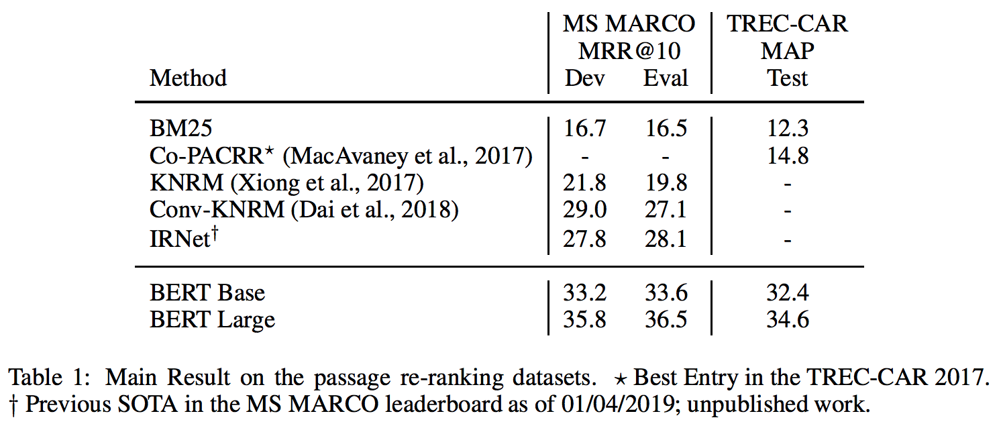

PASSAGE RE-RANKING WITH BERT[论文翻译]
Contents
关于
原文:https://arxiv.org/abs/1901.04085 代码:https://github.com/nyu-dl/dl4marco-bert
Rodrigo Nogueira ，New York University
rodrigonogueira@nyu.edu
Kyunghyun Cho,New York University,Facebook AI Research,CIFAR Azrieli Global Scholar
kyunghyun.cho@nyu.edu
摘要
最近，神经模型在语言建模任务上预训练
例如ELMo (Peters et al., 2017), OpenAI GPT (Radford et al., 2018), and BERT (Devlin et al., 2018)
- 在各种自然语言处理任务中取得了令人瞩目的成果，例如问答和自然语言推理。
- 在本文中，我们描述了一个简单的BERT重新实现，用于基于查询的段落重新排序。
- 我们的系统是TREC-CAR数据集的最新技术，也是MS MARCO段落检索任务排行榜的第一(MS MARCO排行榜)，在MRR@10中的表现优于先前的技术水平27％(相对)。
引言
近年来，我们已经看到机器阅读理解的快速进展大规模数据集
如SQuAD (Rajpurkar et al., 2016), MS MARCO (Nguyen et al., 2016),SearchQA (Dunn et al., 2017), TriviaQA (Joshi et al., 2017) and QUASAR-T (Dhingra et al., 2017),和神经模型的广泛采用，如BiDAF (Seo et al., 2016), DrQA (Chen et al.,2017), DocumentQA (Clark & Gardner, 2017), and QAnet (Yu et al., 2018).
信息检索（IR）社区也经历了神经排序模型的蓬勃发展，例如
DRMM (Guo et al., 2016), KNRM (Xiong et al., 2017), CoPACRR (Hui et al., 2018), and DUET (Mitra et al., 2017).
- 然而，直到最近，除了TREC-CAR(Dietz et al.,2017)之外，只有少数大型数据集用于段落排序。与更传统的IR技术相比，这至少部分地阻止了神经排序模型的成功(Lin，2019)。
- 我们认为，在阅读理解任务上可能取得很大进展的两个要素现在也可用于段落排名任务。也就是说，包含了来自真实用户的100万个查询以及由人类注释的相应段落的MS MARCO Passage Ranking数据集，以及功能强大的通用自然语言处理模型BERT。
- 在本文中，我们详细描述了我们如何将BERT重新用作段落Re-Ranker，并在MS MARCO的文章重新排序任务上取得了最先进的成果。
用BERT进行段落重排
任务
一个简单的问答流程(pipeline)由三个主要阶段组成。 - 首先，通过标准机制（如bm25）从语料库中检索到大量（例如，一千）与给定问题相关的文档。 - 在第二阶段，通过重新排序，通过更加计算密集的方法对这些文档中的每一个进行评分和重新排序。 - 最后，前十个或前五十个文档将通过答案生成模块作为候选答案的来源。 - 在本文中，我们描述了如何实现这个流程(pipeline)的第二阶段，段落重新排序。
方法
Re-Ranker的工作是估算候选文章$d_i$与查询q的相关性得分$s_i$。
- 我们用BERT作为我们的Re-Ranker。
- 将查询作为句子A提供，将段落文本作为句子B提供。使用与Devlin et al.(2018)相同的标记方法
- 缩短查询，使其最多具有64个词(token)。
- 还缩短了段落文本，这样查询、段落和分隔符标记的串联的最大长度为512个词(token)。
- 使用一个$BERT_{large}$模型作为二元分类模型。即使用[CLS]向量作为单层神经网络的输入，以获得段落相关的概率。
- 独立地计算每个段落的概率，并根据这些概率对它们进行排序，从而获得最终的段落列表。
- 我们从一个预先训练好的BERT模型开始训练，并使用交叉熵损失将其微调到我们的重新排序任务。
$$L=-\sum_{j\in J_{pos}} \log(s_j)- \sum_{j\in J_{neg}} \log(1-s_j) \tag{1} $$
$$\text{$J{pos}$是相关段落的索引集}$$ $$\text{$J{neg}$是用bm25检索的前1000个文档中非相关段落的索引集。}$$
实验
我们在两个段落排名数据集上训练和评估我们的模型，MS MARCO和TREC-CAR。
MS MARCO
- 培训集包含大约400个查询元组、相关段落和非相关段落。
- 开发集包含大约6900个查询，每个查询都与从Marco语料库中检索到的前1000篇文章进行配对。
- 平均而言，每个查询都有一个相关的段落。但是，有些没有相关的段落，因为语料库最初是通过从Bing搜索引擎中检索前10个段落并进行注释来构建的。因此，BM25可能无法检索到某些相关段落。
- 还提供了一个评估集，其中包含大约6800个查询及其前1000个检索到的没有相关性注释的段落。
训练
- 我们使用批量大小为32（32 sequences * 512 tokens = 16,384 tokens/batch）的TPU对模型进行微调，每次迭代400K，大约需要70个小时。
- 这相当于在12.8M（400K * 32）的查询段落对上进行的训练，或少于完整培训集的2%。
- 在接下来10天的训练中，我们看不到dev集有任何提升，这相当于总共看到50M对。
- 我们使用Adam（Kingma&BA，2014）
- 初始学习率设置为 $3 \times 10^6$ ，$\beta_1=0.9$，$\beta_2=0.999$，l2权重衰减(L2 weight decay)为0.01。
- 学习率在前10000步预热，学习率线性衰减。我们对所有层使用0.1的dropout probability。
TREC-CAR
- 由Dietz等人介绍(2017)，在这个数据集中，输入查询是维基百科文章标题与其章节标题的串联。
- 相关段落是该节中的段落。
- 语料库包括所有的英语维基百科段落，除了摘要。
- 发布的数据集有五个预定义文件夹，我们使用前四个作为训练集(大约3M的查询)，其余的作为验证集(大约700K的查询)。
- 测试集与用于评估提交给TREC-CAR 2017的测试集相同（约1800个查询）。
尽管TREC-CAR 2017组织者为测试集提供了手动注释，但只有提交给竞赛的系统检索到的前五个段落才有手动注释。这意味着如果真正的相关段落排名较低，则不会对其进行注释。 因此，我们使用自动注释进行评估，自动注释为所有可能的查询 - 段落对提供相关性分数。
训练
- 我们遵循与MS Marco数据集描述的相同的过程来微调Trec-Car上的模型。然而，有一个重要的区别。
- 官方预训练的BERT模型在完整的wikipedia上进行了预训练，因此他们已经看到了用于trec-car测试集的wikipedia文档，尽管在无人监督的情况下。因此，为了避免测试数据泄漏到训练中，我们仅在TREC-CAR训练集使用的维基百科的一半上预训练BERT Re-Ranker。
- 对于微调数据，我们通过使用BM25从整个TREC-CAR语料库中检索前十个段落来生成查询 - 段落对。 这意味着我们最终会得到30M示例对（3M查询 * 10 段落/查询）来训练我们的模型。
- 我们训练它进行400k迭代，或12.8M示例（400k迭代* 32对/批），这相当于训练集的40％。
- 与MS MARCO实验类似，我们没有看到通过长时间训练模型在dev集上有任何收获。
结果

结论
我们已经描述了使用BERT简单改编作为段落Re-Ranker，它已成为两个不同任务的最新技术，即TREC-CAR和MS MARCO。 我们已经公开了复现代码。
Author KoU2N
LastMod 2019-01-24